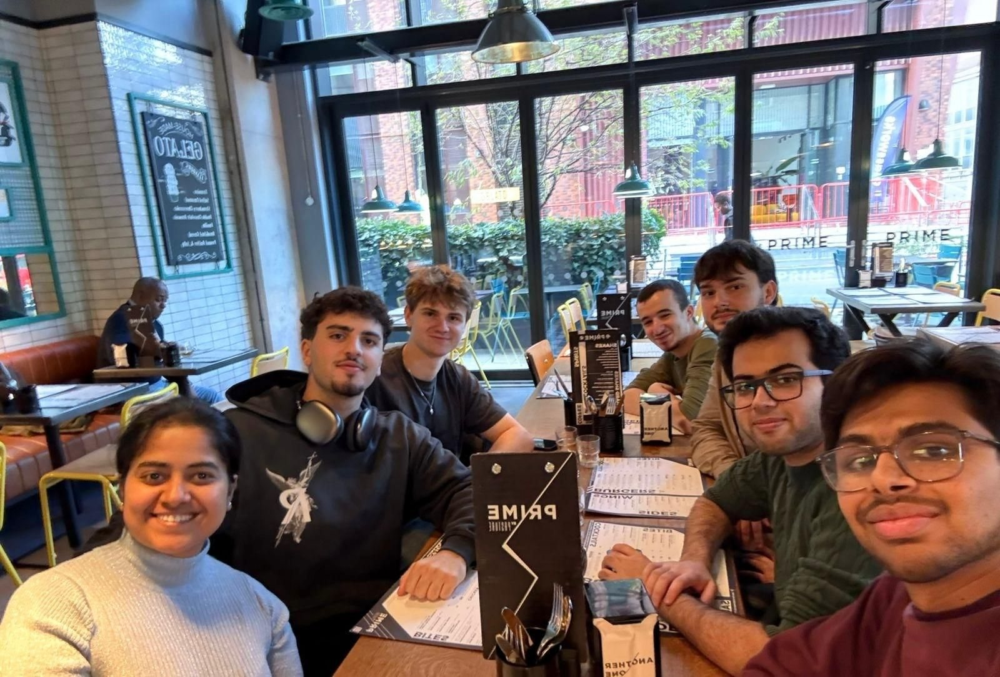
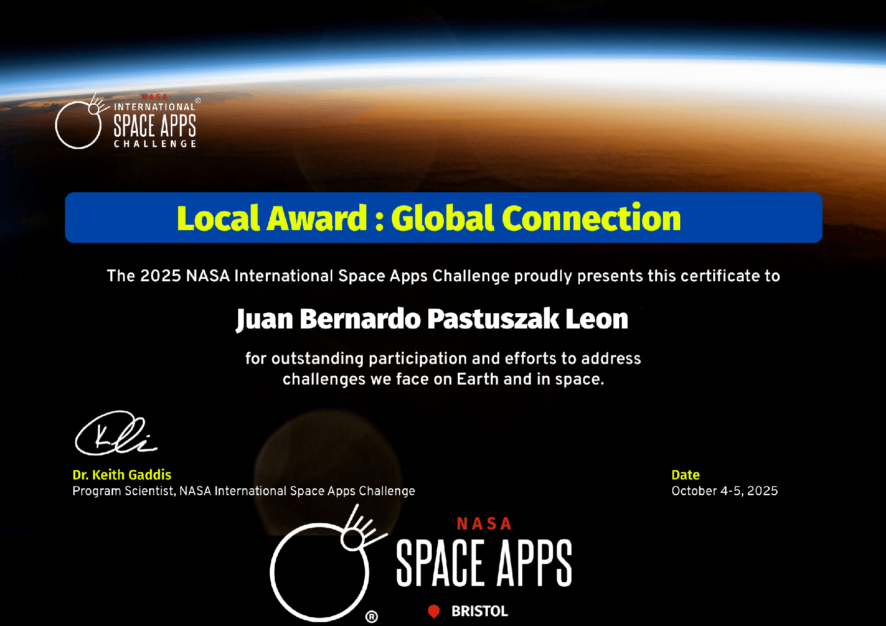

NASA Space Apps Challenge · Bristol · October 2025
LUMINA Aerospace: satellite data for land-use exploration
In a seven-person team, I helped build LUMINA Aerospace, an interactive tool bringing live data access, satellite-derived environmental layers and a combined land-use analysis onto one map of Addis Ababa, Ethiopia. Users could inspect individual indicators or switch to an overall assessment that was easier to interpret.
My contribution
I divided tasks between teammates and worked on the backend. When our initial plan proved too ambitious, I initiated the discussion that helped the team agree a manageable scope for the final deliverable.
We used Google Earth Engine to select and process openly available Earth observation data. Its catalogue made satellite collections accessible through JavaScript scripts, with filters for the study area, observation dates and cloud coverage. Earth Engine provides unpaid access for eligible, registered noncommercial projects.
Our vegetation workflow used Copernicus Sentinel-2 surface-reflectance imagery. Sentinel-2’s multispectral instrument records red and near-infrared light; we combined those bands into the Normalised Difference Vegetation Index (NDVI), which makes differences in vegetation cover easier to see.
Our Sentinel-2 processing selected observations from July to September 2025 over a roughly 100 km by 100 km area around Addis Ababa. It masked cloud and shadow pixels, calculated NDVI from the red B4 and near-infrared B8 bands, and formed a median composite before grouping the result into five vegetation classes.
For rainfall, we used IMERG from NASA and JAXA’s Global Precipitation Measurement (GPM) mission. IMERG combines observations from the international precipitation-measuring satellite constellation into half-hourly rainfall estimates. Our script combined precipitation information with vegetation data to produce a further analysis layer.
Earth Engine exported the processed layers as georeferenced GeoTIFF files. We exported both the vegetation classes and the combined vegetation and rainfall index at a 500 m output scale; the red and near-infrared Sentinel-2 source bands have 10 m pixels. Open soil-property datasets added indicators such as pH, nutrients, texture and organic carbon.
The individual layers let users explore the underlying environmental data. The combined analysis layer brought those inputs together into a single colour-coded suitability assessment, giving users an overall view without requiring them to interpret every indicator separately.
The Python processing aligned the rasters to a common coordinate system, grid and extent so that values referred to the same ground locations. The scoring workflow reclassified indicators, applied weights and exported the combined score as a new geospatial layer. Users could move between that summary and the individual layers to understand what contributed to the result.
Displaying the data interactively
The tool paired live data access with a JavaScript and Leaflet map. The browser fetched the GeoTIFF layers, read their georeferencing and rendered their values as coloured overlays on an OpenStreetMap basemap.
Selecting a metric changed the displayed layer and its legend, while the opacity control updated the overlay on screen. Users could pan and zoom, explore vegetation, rainfall-related and soil indicators, then select the combined analysis layer for a clearer overall assessment.

The LUMINA Aerospace team.Image shared by the Cabot Institute for the Environment, University of Bristol, on LinkedIn.
Working towards a deliverable in 48 hours
We initially divided the work between data research, retrieving and displaying imagery, and frontend and backend development. After the first day, the original scope was too large for the time remaining.
I started an open discussion about the difficulties and how to divide the remaining work realistically. We agreed to prioritise the main deliverable and completed a working tool.

My Local Award: Global Connection certificate from NASA Space Apps Bristol, 4 to 5 October 2025.
The team’s hackathon result
The team won the regional competition in Bristol, was selected as a Global Nominee and received the local Global Connection award.
Tools and methods
Google Earth Engine, Python, rasterio, NumPy, GeoTIFF, JavaScript, Leaflet, HTML and CSS